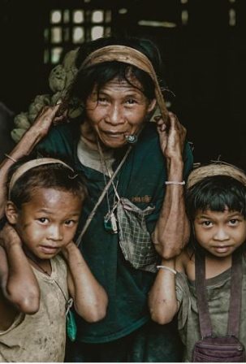
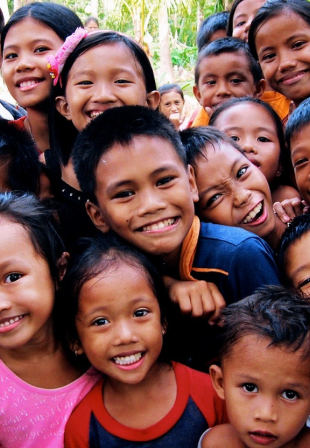
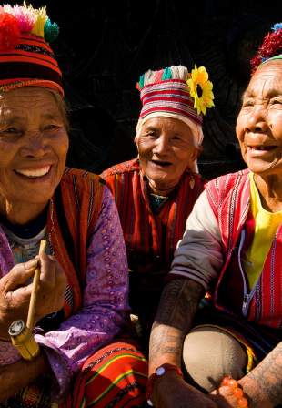
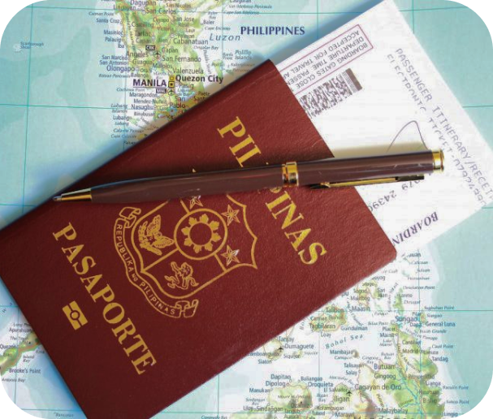
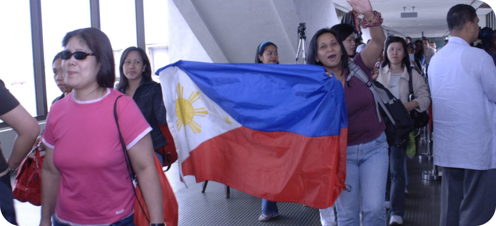

THE FOUR ELEMENTS
OF THE STATE
PEOPLE



CITIZENSHIP

GENERAL MODES OF
ACQUIRING CITIZENSHIP
1. BY BIRTH (JUS SOLI)
2. BY DESCENT (JUS SANGUINIS)
BORN ABROAD TO FILIPINO PARENTS
3. BY NATURALIZATION
3. BY NATURALIZATION
ADMINISTRATIVE NATURALIZATION
JUDICIAL NATURALIZATION
LEGISLATIVE NATURALIZATION
4. BY ELECTION

5. BY REPATRIATION
